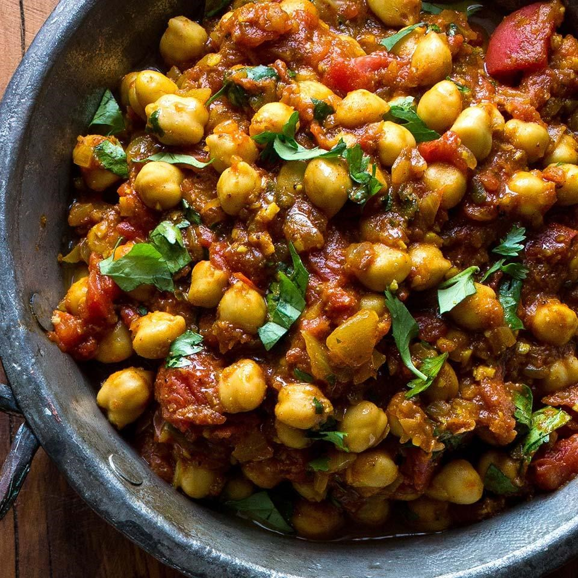
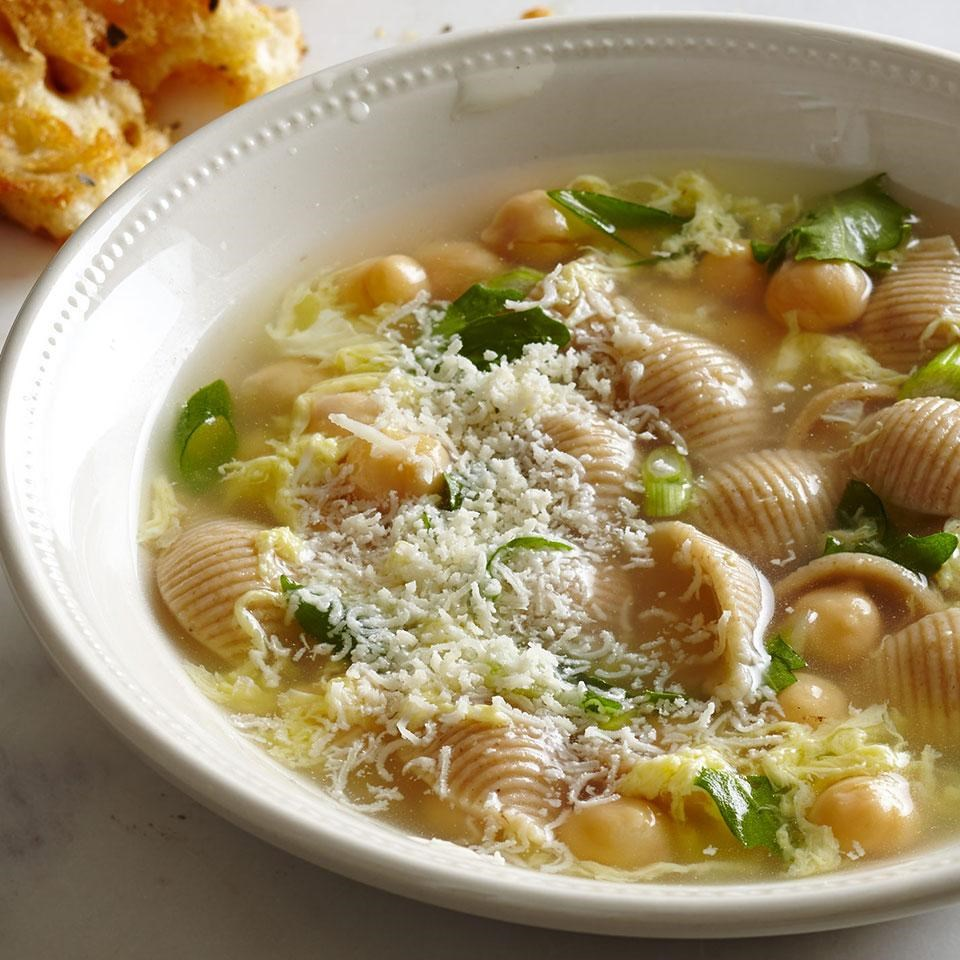
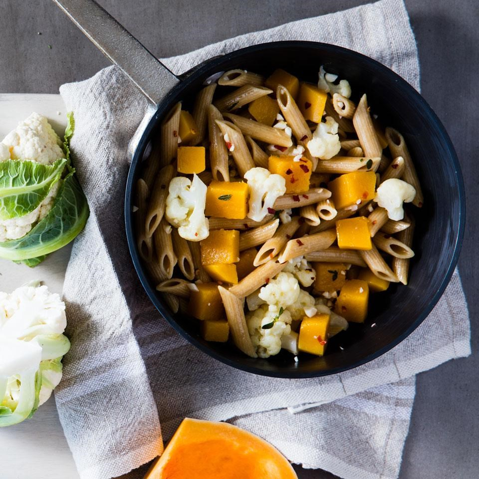

After a long day ...
Chicken & Mushroom Shepherd's Pie
The creamy chicken filling is spiked with sherry and the potatoes are mashed with olive oil in this healthy shepherd's pie recipe. To make individual pies, use six 10-ounce ramekins. Serve with a leafy green salad with balsamic vinaigrette and crusty bread.
How to prepare?
-
Ingredients :
- > 2 pounds Yukon Gold potatoes, peeled if desired and cut into 1-inch chunks
- > ½ cup low-fat milk
- > 2 tablespoons extra-virgin olive oil
- > ½ teaspoon salt
- > 2 tablespoons extra-virgin olive oil
- > 8 ounces cremini (baby bella) mushrooms, halved and sliced
- > 1 cup chopped onion
- > 1 teaspoon chopped fresh thyme or ¼ teaspoon dried
- > ½ teaspoon salt, divided
- > ½ cup dry sherry (see Tip)
- > 1½ cups low-sodium chicken broth or homemade chicken stock
- > 3 tablespoons all-purpose flour
- > 2 cups cubed cooked chicken ( ½-inch; about 10 ounces)
- > 1 cup frozen peas and carrots
- > ¼ teaspoon ground pepper 
- > 1 medium serrano pepper, cut into thirds
- > 4 large cloves garlic
- > 1 2-inch piece fresh ginger, peeled and coarsely chopped
- > 1 medium yellow onion, chopped (1-inch)
- > 6 tablespoons canola oil or grapeseed oil
- > 2 teaspoons ground coriander
- > 2 teaspoons ground cumin
- > ½ teaspoon ground turmeric
- > 2¼ cups no-salt-added canned diced tomatoes with their juice (from a 28-ounce can)
- > ¾ teaspoon kosher salt
- > 2 15-ounce cans chickpeas, rinsed
- > 2 teaspoons garam masalaFresh cilantro for garnish
- > 1 5-ounce package baby spinach
- > 3 tablespoons water
- > ½ cup lightly packed fresh parsley sprigs
- > 4 teaspoons lemon juice
- > 4 teaspoons orange juice
- > 1 clove garlic, quartered
- > ½ teaspoon salt, divided
- > ½ teaspoon ground pepper, divided
- > ¼ teaspoon crushed red pepper
- > 1¼ pounds cod (see Tip), cut into 4 portions
- > 1 tablespoon grapeseed oil or canola oil
- > ¼ cup sliced toasted almonds 
- > 6 cups reduced-sodium chicken broth
- > 2 cups water
- > 1⅓ cups whole-wheat medium pasta shells or other small pasta (4 ounces)
- > 1 7-ounce can chickpeas, rinsed
- > 1 bunch scallions, sliced, whites and greens divided
- > Pinch of freshly grated nutmeg
- > 3 cups chopped arugula, any tough stems removed
- > 4 large eggs, lightly beaten
- > 2 tablespoons lemon juice
- > 6 tablespoons freshly grated Parmesan cheese
- > Freshly ground pepper to taste 
- > 1 tablespoon extra-virgin olive oil
- > 3 large cloves garlic, minced1 teaspoon dried thyme
- > ¼ teaspoon crushed red pepper
- > 4 cups “no-chicken” broth (see Tips) or vegetable broth
- > 8 ounces whole-wheat penne (about 3 cups)
- > 2 cups 1-inch cauliflower florets
- > 2 cups 1-inch pieces peeled butternut squash
- > Freshly ground pepper to taste
- > ¼ cup finely shredded Pecorino Romano cheese
Topping
Filling
Chickpea Curry (Chhole)
Made with convenient canned beans, this quick and healthy Indian recipe is an authentic chickpea curry that you can make in minutes. Warming spices like ginger, cumin and garam masala add deep flavor to the dish. If you want an additional vegetable, stir in some roasted cauliflower florets. Serve with brown basmati rice or warm naan.
How to prepare?
-
Ingredients :

Seared Cod with Spinah-Lemon Sauce
A citrus-laced spinach sauce zests up delicate cod in this healthy fish recipe. If you can find Meyer lemons, use their sweeter juice instead of the regular lemon and orange juices. Serve with roasted cherry tomatoes and zucchini with angel hair pasta.
How to prepare?
-
Ingredients :
Italian Egg-Drop Soup
Italian egg-drop soup, Stracciatella, is traditionally a light soup made with just chicken broth, eggs and herbs. We added pasta, chickpeas and arugula to turn it into a satisfying, yet still low-calorie meal. Serve with the soup with garlic bread and a Caesar salad.
How to prepare?
-
Ingredients :
Braised Cauliflower & Squash Penne Pasta
In this braised cauliflower and squash penne pasta recipe, we cook the pasta and vegetables in broth rather than water to make this warming vegetarian pasta extra flavorful. The starch from the pasta and vegetables combines with the broth as it simmers and creates a silky sauce. And you can make the whole dish in just one pot, so cleanup is a breeze.
How to prepare?
-
Ingredients :